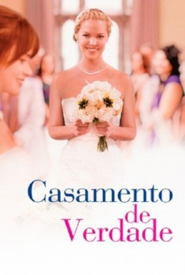

Casamento de Verdade (2015)


Pela família, vale a pena lutar

Avaliação (TMDb):


5.7/10 (332 votos)
Avaliação (Usuário):
Outro Título:Jenny's Wedding
País:United States, 94 minutos
Idiomas falados:Inglês, Português
Gênero(s):Comédia, Drama
Diretor(s):Mary Agnes Donoghue
Codec:MPEG-2 (DVD)
Número: 2794
Sinopse:
Jenny provoca uma mudança radical em sua família unida e bem convencional, quando anuncia que irá casar. A escolha do parceiro acaba despedaçando a família.\r Jenny terá de conectar todos e se reinventar.
Elenco:
Katherine Heigl, Tom Wilkinson, Linda Emond, Grace Gummer, Alexis Bledel, Sam McMurray, Diana Hardcastle, Matthew Metzger, Houston Rhines, Cathleen O'Malley
Tipo de mídia: DVD5,
Legendas: Português
Alugado: Não
Tela: 2.35:1